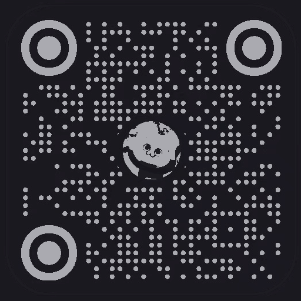

未央黑客松 · 赛道二
先认清你是什么人，
再预演你的大学生活。
别人都在做"扮演一个大一新生去聊天"的模拟器。我们不。 新生真正的焦虑不是流程不知道，而是"我进了新群体，会不会是那个落下的"。 所以先用 UBTI 认出你是十六型里的哪一种，再让 AI 把你写下的忐忑，预演成一幕幕会发生的大学日常。 你的期待和焦虑，变成你的作品。
你的 UBTI 类型
可爱之处
盲点提醒
把你带来的忐忑写下来
一句也行。对大学的期待、害怕、说不清的不安——写下来，它会成为下面预演的主线。
正在把你写下的忐忑，预演成会发生的日常……
你的大学预演卡
问渠 · 每日一问
先答一道，看看它问得有多狠
预演是替你把四年演一遍。而问渠做的事更难：它每天只问你一道题，不长、不鸡汤、 不绕弯子，只问你自己。下面是题库里的一问，你可以真的答一句。
问渠
每天一道犀利的问题，替你记着你自己。
扫码关注小红书 @鱼一朵
问渠还在上架路上，上架后在小红书说一声
